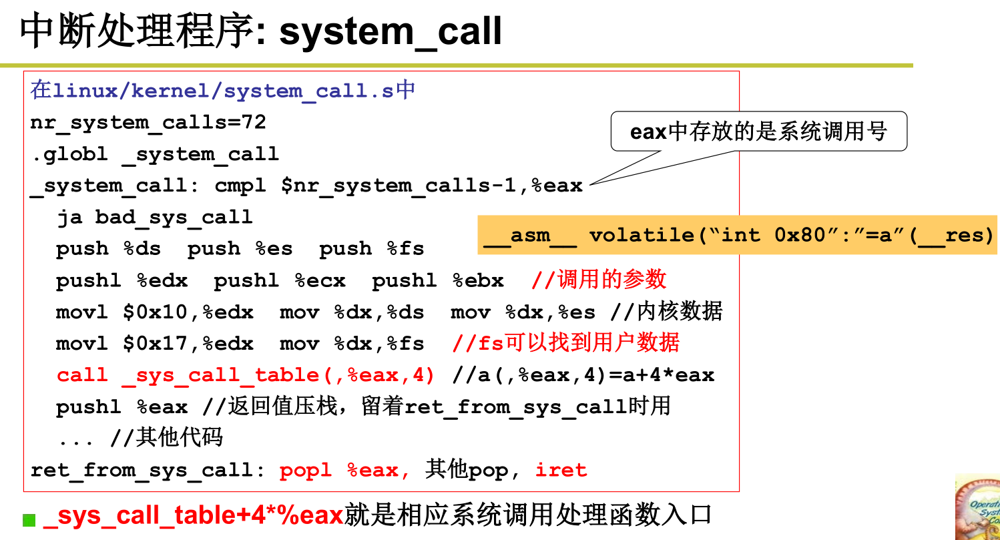
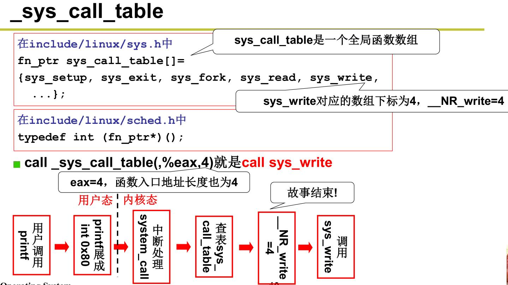

概念
摘自https://zh.wikipedia.org/wiki/%E7%B3%BB%E7%BB%9F%E8%B0%83%E7%94%A8
在电脑中，系统调用（英语：system call），指运行在使用者空间的程序向操作系统内核请求需要更高权限运行的服务。系统调用提供用户程序与操作系统之间的接口。大多数系统交互式操作需求在内核态执行。如设备IO操作或者进程间通信。
操作系统的进程空间可分为用户空间和内核空间，它们需要不同的执行权限。其中系统调用运行在内核空间。
简单描述，系统调用就是让用户程序执行内核提供的服务，这些服务是运行在内核态，系统调用是通过软中断的方式让进程运行在内核态。在系统调用完成后，进行继续返回用户态运行
系统调用号
系统调用表
系统调用分类
进程管理型：fork，vfork，clone，ptrace, setrlimit等
时间操作型：alarm, sleep ,time等
信号处理型：kill, signal等
调度相关：setpriority, getpriority, sched_yield等
模块：init_module, delete_module
文件系统: mkdir, rmdir, rename, symlink, link, unlink, poll, select等
内存管理：brk, mmap等
系统信息与设置：sysinfo, sysctl等
实现
摘自[gityuan]http://gityuan.com/2016/05/21/syscall/
- 系统调用的函数原型的指针：位于文件/kernel/arch/arm/kernel/calls.S，格式为
CALL(sys_xxx)，指定了目标函数的入口地址。 - 系统调用号的宏定义：位于文件/kernel/arch/arm/include/Uapi/asm/unistd.h，记录着内核空间的系统调用号，格式为
#define__NR_xxx (__NR_SYSCALL_BASE+[num]) - 系统调用的函数声明：位于文件/kernel/include/linux/syscalls.h，格式为
asmlinkage long sys_xxx(args ...); - 系统调用的函数实现：不同函数位于不同文件，比如kill()位于/kernel/kernel/signal.c文件，格式为
SYSCALL_DEFINEx(x, sname, ...)
从上面介绍就可以来自己增加一个系统调用。
核心流程如下：
1 | -分配系统调用号, unistd.h |
参数传递
在IA-32系统上，使用的汇编指令int$0x80触发软中断128，寄存器eax保存系统调用号，ebx,ecx,edx,esi,edi保存参数。当然，在不同的体系结构中提供了不同的指令来实现系统调用。
系统调用返回值定义
include/asm-generic/error-base.h
include/asm-generic/error.h
在这两个文件中定义了系统调用返回错误时候的具体含义，可供参考。

